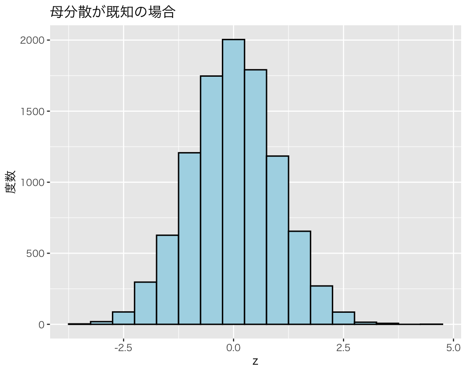
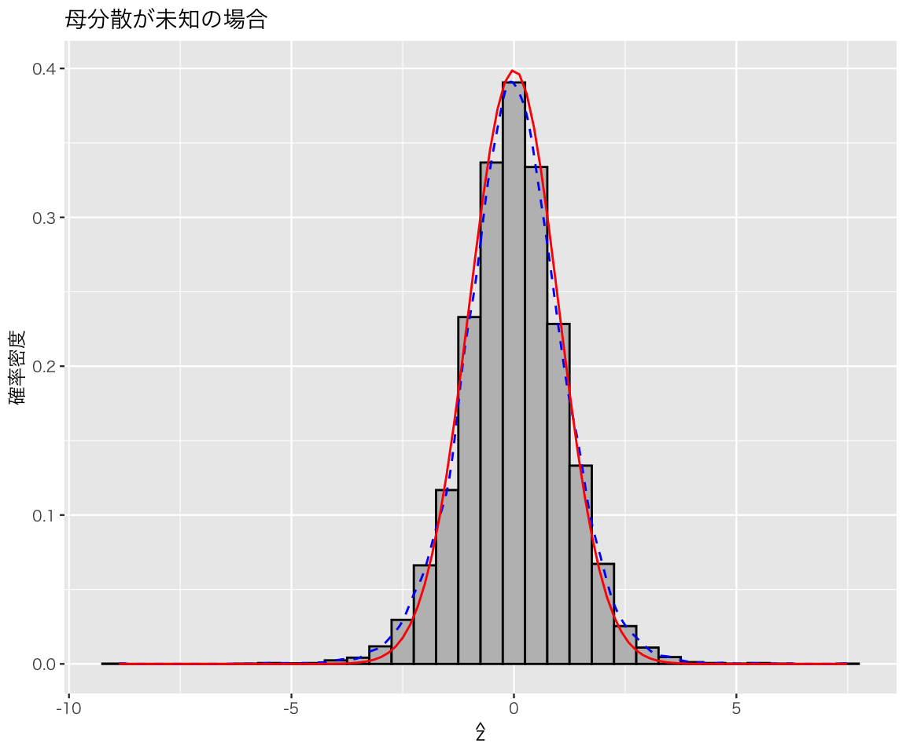
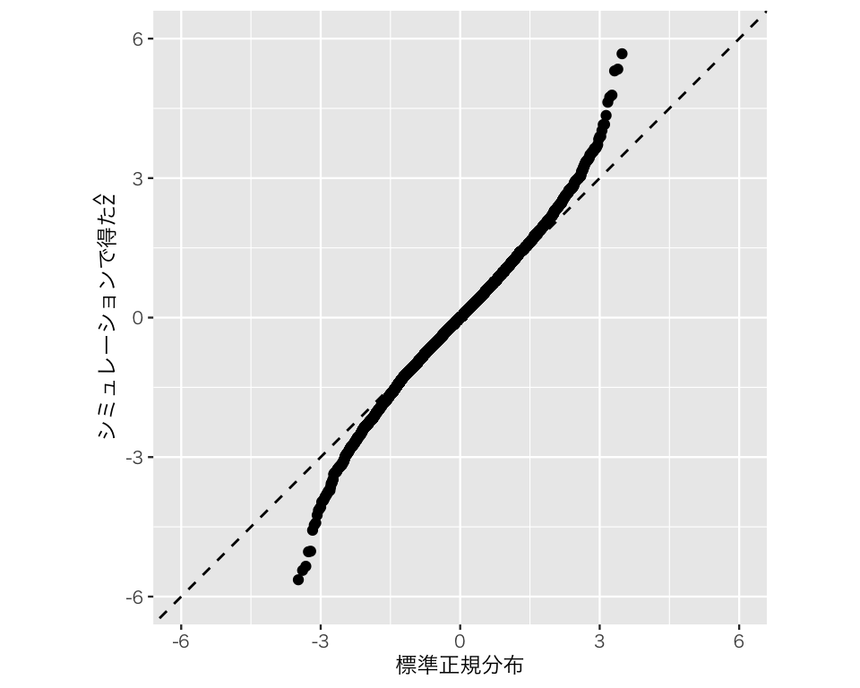
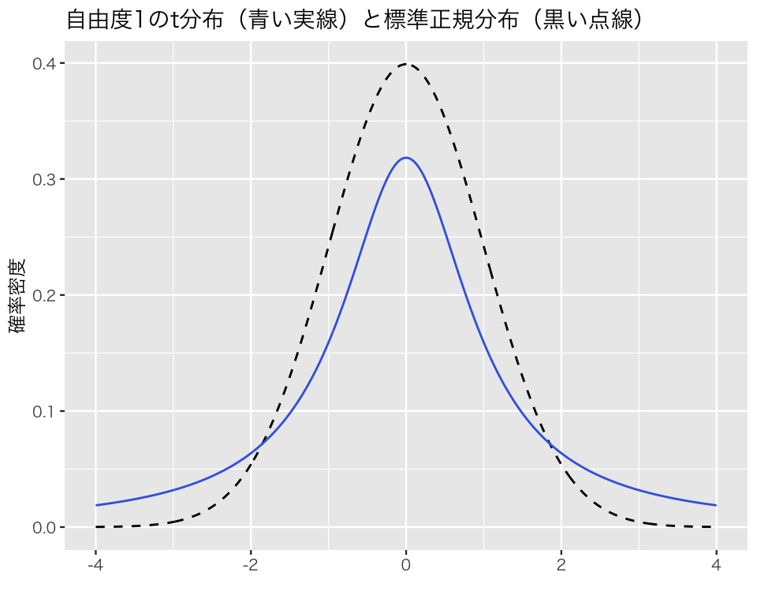

library(tidyverse)
## 図の中で日本語を使えるようにする
## フォントの設定はお好みで
## （Unix/Linux ではIPAexフォントのインストールが必要かも）
if (.Platform$OS.type == "windows") {
my_font <- "Yu Gothic"
} else if (capabilities("aqua")) {
my_font <- "HiraginoSans-W3"
} else {
my_font <- "IPAexGothic"
}
theme_set(theme_gray(base_size = 9,
base_family = my_font))10 \(t\) 分布を利用した母平均の推定
今回の目標
- \(t\) 分布と標準正規分布の違いを理解しよう！
- \(t\) 分布を利用した統計的推定の方法を身につけよう！
10.1 準備
今回利用するパッケージを読み込む。
10.2 母集団を定義する
成人男性の身長に興味があるとする。母集団の人口を100万、母平均を約170cm、母標準偏差を約6cm に設定する。
pop <- rnorm(1e6, mean = 170, sd = 6)母集団の身長分布は以下のようになる。
pop_height <- ggplot(tibble(pop),
aes(x = pop,
y = after_stat(density))) +
geom_histogram(color = "black") +
labs(x = "身長 (cm)",
y = "確率密度",
title = "母集団の分布")
plot(pop_height)`stat_bin()` using `bins = 30`. Pick better value `binwidth`.この母集団の身長の平均（母平均）は、
mean(pop)[1] 169.9955であり、身長の標準偏差（母標準偏差）は、
sd(pop)[1] 6.011032である。
10.3 標本を抽出して母平均を推定する
10.3.1 標本抽出と母平均の推定のシミュレーション
100万人の母集団で全員を調べるのではなく、10人だけ標本として抜き出して母平均を推定することを考える。 シミュレーションで標本抽出を1万回繰り返し、それぞれの標本で標本平均を計算しよう。
まず、標本サイズを10に、シミュレーション回数を1万に設定する。
N <- 10 # 標本サイズ
n_sims <- 1e4 # シミュレーションの繰り返し回数1万個の標本平均を保存するためのベクトルを用意する。
means <- rep(NA, 1e4)また、後で使うので、不偏分散の平方根も保存できるようにする。
u <- rep(NA, 1e4)母集団 pop から標本サイズ N = 10 の標本を抽出する作業を n_sims = 10000回繰り返し、それぞれで標本平均と不偏分散の平方根を計算する。
標本平均の標本分布を確認してみよう。
df_sim <- tibble(mean = means,
sd = u)
h1 <- ggplot(df_sim, aes(x = mean)) +
geom_histogram(binwidth = 1,
color = "black",
fill = "dodgerblue") +
labs(x = "身長の標本平均 (cm)",
y = "度数")
plot(h1)なんとなく正規分布になっているように見えるが、はたしてそうだろうか。 得られた標本平均を標準化して、標準正規分布と分布を比べてみよう。
10.3.1.1 母分散 \(\sigma^2\) を知っているとき
母分散 \(\sigma^2\)（あるいは母標準偏差 \(\sigma\)）を知っているという特殊な場合について考える。このとき、標本平均 \(\bar{x}\)は、以下の式で標準化 (standardize) できる。
\[ z = \frac{\bar{x} - \mu}{\frac{\sigma}{\sqrt{N}}}. \] 標本平均は不偏推定量なので、 \[ \mathbb{E}[\bar{x}] = \mu \] となる。そこで、\(\mu\) は、
(mu <- mean(means))[1] 169.9729としよう。
また、仮定により \(\sigma\) は知っているので母集団の \(\sigma\) を使う。
(sigma <- sd(pop))[1] 6.011032これらの値を使うと、標準化された標本平均 \(z\) は、
z <- (means - mu) / (sigma / sqrt(N))となる。
この \(z\) の分布を確認してみよう。
df_sim$z <- z
h2 <- ggplot(df_sim, aes(x = z)) +
geom_histogram(binwidth = 0.5,
color = "black",
fill = "lightblue") +
labs(title = "母分散が既知の場合",
y = "度数")
plot(h2)
標準正規分布に似ているように見える。geom_density() を使って \(z\) の確率密度曲線（青い点線） を描き、標準正規分布の確率密度曲線（赤い実線）と比べてみよう。
h3 <- ggplot(df_sim) +
geom_histogram(aes(x = z,
y = after_stat(density)),
binwidth = 0.5,
color = "black",
fill = "lightblue") +
geom_density(aes(x = z,
y = after_stat(density)),
color = "blue",
linetype = "dashed") +
stat_function(fun = dnorm,
inherit.aes = FALSE,
color = "red") +
labs(y = "確率密度",
title = "母分散が既知の場合")
plot(h3)
2つの確率密度曲線はほぼ一致している。
この例のように、母分散を知っているとき、標本平均を標準化した \(z\) の分布は標準正規分布に従う。したがって、私たちは区間推定に（これまでどおり）標準正規分布を利用することができる。
10.3.1.2 母分散 \(\sigma^2\) を知らないとき
しかし、通常私たちは標本しか調べられないので母分散を知らない。母分散を知らないときはどうなるだろうか。
母分散を知らないとき、先ほどと同じ標準化はできない。なぜなら、上で使った標準化の式には、\(\sigma\) が出てくるが、その値を知らないからだ。そこで、母標準偏差 \(\sigma\) の推定値として、不偏分散の平方根 \(u\) を使う。この値は既にuとして保存してある。
この \(u\) を使い、標本平均 \(\bar{x}\)は、以下の式で標準化する（\(\hat{z}\) は「\(z\)ハット」と読む）。 \[\hat{z} = \frac{\bar{x} - \mu}{\frac{u}{\sqrt{N}}}.\]
z_hat <- (means - mu) / (u / sqrt(N))この \(\hat{z}\) の分布を確認してみよう。
df_sim$z_hat <- z_hat
h4 <- ggplot(df_sim, aes(x = z_hat)) +
geom_histogram(binwidth = 0.5,
color = "black",
fill = "gray") +
labs(x = expression(hat(z)),
y = "度数",
title = "母分散が未知の場合")
plot(h4)
標準正規分布に似ているように見えるが、どうだろうか。geom_density() を使って \(\hat{z}\)の確率密度曲線（青い点線） を描き、標準正規分布の確率密度曲線（赤い実線）と比べてみよう。
h5 <- ggplot(df_sim) +
geom_histogram(aes(x = z_hat,
y = after_stat(density)),
binwidth = 0.5,
color = "black",
fill = "gray") +
geom_density(aes(x = z_hat,
y = after_stat(density)),
color = "blue",
linetype = "dashed") +
stat_function(fun = dnorm,
inherit.aes = FALSE,
color = "red") +
labs(x = expression(hat(z)),
y = "確率密度",
title = "母分散が未知の場合")
plot(h5)2つの確率密度曲線は、少しずれている。 2つの確率密度は、0（付近）で最大値をとるという点で同じである。 しかし、分布のばらつきが違う。 平均値付近を比べると、\(\hat{z}\) の分布の方が確率密度が低くなっている。 代わりに、分布の両裾を比べると、\(\hat{z}\) の分布の方が、確率密度が高い。 言い換えると、\(\hat{z}\) の分布は、標準正規分布よりも裾が厚い（重い）分布になっている。
この例のように、母分散を知らないとき、標本平均を標準化した \(\hat{z}\) の分布は標準正規分布に従わない。したがって、私たちは区間推定に標準正規分布を利用することができない。
実は、\(\hat{z}\) の分布は自由度 \(N - 1\) の \(t\) 分布にしたがっている。 ためしに（シミュレーションで使ったサンプル\(N\)は 10なので）自由度9の\(t\)分布の確率密度曲線（赤い実線）を重ね書きしてみよう。
h6 <- ggplot(df_sim) +
geom_histogram(aes(x = z_hat,
y = after_stat(density)),
binwidth = 0.5,
color = "black",
fill = "gray") +
geom_density(aes(x = z_hat,
y = after_stat(density)),
color = "blue",
linetype = "dashed") +
stat_function(fun = dt,
args = list(df = 9),
inherit.aes = FALSE,
color = "red") +
labs(x = expression(hat(z)),
y = "確率密度",
title = "母分散が未知の場合")
plot(h6)
このように、確率密度曲線がほぼ一致する。
10.3.1.3 \(\ast\)分布の比べ方
上の例では、確率密度曲線を重ね書きすることで分布を比較した。 もう少し厳密に分布を比べたいとき、特に2つの分布が同じ分布といえるかどうか確かめたいときには、Q-Qプロット (qunatile-quantile plot) という図を使う。
この図では、分布を確かめる対象となるシミュレーションで得た変数の分位点 (quantile) を縦軸に、比較対象の（基準となる）分布の分位点を横軸にとる。分位点と分位点を比べるので、Q-Q プロットと呼ばれる。
分位点とは、簡単に言うと、「確率分布で下からa%分に相当する値はいくつか」という値である。標準正規分布では、2.5%の分位点 (「2.5パーセンタイル」と呼ばれる) は\(-1.96\)、50%の分位点（50パーセンタイル）は\(0\)、97.5％の分位点は\(1.96\) である。 Rでは、quantile() で分位点を求めることができる。
シミュレーションで得た \(z\) の分布については、2.5パーセンタイルが -1.97、50パーセンタイルが0、97.5パーセンタイルが 1.92 であることがわかる。
2つの分布がもし完全に一致するなら、2つの分布の a% の分位点は、aがどんな値であっても等しいはずである。したがって、片方の分布の分位点を \(y\)、もう一方の分布の分位点を \(x\) とすれば、2つの分布が等しいときには \(y=x\) になるはずである。つまり、yとxの散布図の点が45度線の上にすべて乘るはずである。
この性質を利用し、Q-Qプロット上の点が45度線の上にあるかどうか（45度線からどれだけずれているか）を調べることで、分布を比較する。
まず、\(z\)（母分散を知っているときに、標本平均を標準化したもの; sample）と標準正規分布 (qnorm) を比べてみよう。 標準正規分布と比較するためのQ-Qプロットは、stat_qq() で作れる。
qq1 <- ggplot(df_sim, aes(sample = z)) +
geom_abline(intercept = 0,
slope = 1,
linetype = "dashed") + # 45度線
stat_qq(distribution = qnorm) +
coord_fixed(ratio = 1) + # 図の縦横比を1:1にする
labs(x = "標準正規分布",
y = "シミュレーションで得たz")
plot(qq1)
シミュレーションなので多少のずれはあるものの、点がほぼ45度線上にあることがわかる。
次に、\(\hat{z}\)（母分散を知らないときに、標本平均を標準化したもの）と標準正規分布を比べてみよう。
qq2 <- ggplot(df_sim, aes(sample = z_hat)) +
geom_abline(intercept = 0,
slope = 1,
linetype = "dashed") + # 45度線
stat_qq(distribution = qnorm) +
xlim(-6, 6) +
ylim(-6, 6) +
coord_fixed(ratio = 1) + # 図の縦横比を1:1にする
labs(x = "標準正規分布",
y = expression(paste("シミュレーションで得た", hat(z))))
plot(qq2)Warning: Removed 4 rows containing missing values or values outside the scale range
(`geom_point()`).先ほどとは異なり、点が45度線から大きくずれている。ここから、\(\hat{z}\)は標準正規分布に従わないことがよりはっきりとわかる。特に、裾（図の両端）で標準正規分布との違いが大きいことがわかるだろう。
最後に、\(\hat{z}\)（母分散を知らないときに、標本平均を標準化したもの）と自由度9の\(t\)分布 (qt(df = 9)) を比べてみよう。
qq3 <- ggplot(df_sim, aes(sample = z_hat)) +
geom_abline(intercept = 0,
slope = 1,
linetype = "dashed") + # 45度線
stat_qq(distribution = qt, dparams = 9) +
xlim(-6, 6) +
ylim(-6, 6) +
coord_fixed(ratio = 1) + # 図の縦横比を1:1にする
labs(x = "自由度9のt分布",
y = expression(paste("シミュレーションで得た", hat(z))))
plot(qq3)Warning: Removed 4 rows containing missing values or values outside the scale range
(`geom_point()`).
やはり多少のずれはあるものの、ほとんどの点が45度線上に乗っていることがわかる。よって、\(\hat{z}\)は、自由度9の\(t\)分布に従っていると言えそうである（少なくとも、「自由度9の\(t\)分布に従っていない」とはっきり言うことはできない）。
10.4 \(t\) 分布を理解する
\(t\) 分布は、自由度 \(df > 0\) によってその形を変える。
たとえば、自由度1, 2, 10の \(t\)分布は以下のように分布する。比較のため、標準正規分布も一緒に示す。
まず、データフレームを作る。
x1 <- seq(-3, 3, length = 1000)
stdn <- dnorm(x1, mean = 0, sd = 1)
t1 <- dt(x1, df = 1)
t2 <- dt(x1, df = 2)
t10 <- dt(x1, df = 10)
df_t <- tibble(x = rep(x1, 4),
t = c(stdn, t1, t2, t10),
group = rep(c("stdn", "t1", "t2", "t10"), rep(1000, 4)))
glimpse(df_t)Rows: 4,000
Columns: 3
$ x <dbl> -3.000000, -2.993994, -2.987988, -2.981982, -2.975976, -2.969970…
$ t <dbl> 0.004431848, 0.004512344, 0.004594136, 0.004677241, 0.004761679,…
$ group <chr> "stdn", "stdn", "stdn", "stdn", "stdn", "stdn", "stdn", "stdn", …図を作る（この図の作り方は理解できなくてもよい）。
plt_t <- ggplot(df_t, aes(x = x, y = t,
color = group, linetype = group)) +
geom_line() +
scale_color_brewer(palette = "Accent",
name = "",
labels = c("標準正規分布", "t(df = 1)",
"t(df = 2)", "t(df = 10)")) +
scale_linetype_discrete(name = "",
labels = c("標準正規分布", "t(df = 1)",
"t(df = 2)", "t(df = 10)")) +
labs(x = "", y = "確率密度")
plot(plt_t)
\(t\)分布の特徴として、
- 0を中心として左右対称
- 標準正規分布より山の頂上が低く、裾が厚い（重い）
- 自由度が大きくなるほど標準正規分布に近づく
という点が挙げられらる。
\(t\)分布の形状を確認するための関数を用意したので、これを使って色々な\(t\)分布の形状を確認し、\(t\)分布の特徴を理解しよう（この関数の中身を理解する必要はない）。
plot_t <- function(df) {
x <- seq(from = -4, to = 4, length = 1000)
t <- dt(x, df = df)
nml <- dnorm(x, mean = 0, sd = 1)
d <- tibble(x, t, nml)
p <- ggplot(d, aes(x = x)) +
geom_line(aes(y = nml), linetype = "dashed") +
geom_line(aes(y = t), color = "royalblue") +
labs(x = "", y = "確率密度",
title = str_c("自由度", df, "のt分布（青い実線）と標準正規分布（黒い点線）"))
plot(p)
}自由度1の\(t\)分布は、
plot_t(df = 1)
自由度3の \(t\)分布は、
plot_t(df = 3)
となることが確認できる。
実習課題
自由度 (df) の値をによって\(t\)分布がどのように変化するか、関数 plot_t() を使って確かめてみよう。
10.5 \(t\) 分布を利用した区間推定
\(t\) 分布を使った区間推定の方法も、基本的には標準正規分布を使った推定方法と同じである。 身長 \(x\) の点推定値を \(\bar{x}\) とすると、以下のように定義される信頼区間 (confidence interval; CI) を区間推定に使う。
\[ \left[\bar{h} - t_{N-1, p} \cdot \mathrm{SE}, \bar{h} + t_{N-1, p} \cdot \mathrm{SE} \right]. \]
標準正規分布で \(Q\) と表していた値（qnorm() で求めた）を\(t_{N-1, p}\) （qt() で求める）に変えただけである。
母集団から \(N=10\) の標本を1つ取り出して、身長の母平均を推定してみよう。
smpl_1 <- sample(pop, size = 10, replace = FALSE)身長 \(x\) の母平均の点推定値 \(\bar{x}\) は、
(x_bar <- mean(smpl_1))[1] 167.7088である。
また、標準誤差は、\[\mathrm{SE} = \frac{u}{\sqrt{N}}\] だから、
である。
ここで、標本サイズ\(N = 10\) だから、区間推定を行うには自由度 \(N - 1 = 9\) の \(t\) 分布を利用する。95パーセント信頼区間を求めたいとすると、\(t\)分布の下側2.5%分と、上側2.5%分を除外したい。そのために必要なのが、\(t_{9, 0.025}\)（または、\(-t_{9, 0.025}\)）の値である。これを qt() で求める。
qt(df = 9, p = 0.025) # 下側[1] -2.262157## qt(df = 9, p = 0.025, lower.tail = FALSE) # 上側
## qt(df = 9, p = 0.975) # 上側はこれでも求められるこれらの値を使うと、母平均の95%信頼区間を求める。
(lb <- x_bar + qt(df = 9, p = 0.025) * se)[1] 162.5434(ub <- x_bar + qt(df = 9, p = 0.975) * se)[1] 172.8742よって、母平均の95%信頼区間は、[162.54, 172.87] である。
ちなみに、\(t\) 分布の代わりに標準正規分布を使って95%信頼区間を求めると、
(lb_n <- x_bar + qnorm(p = 0.025) * se)[1] 163.2335(ub_n <- x_bar + qnorm(p = 0.975) * se)[1] 172.1842となり、[163.23, 172.18] という区間が得られる。この区間は、\(t\)分布を使って求めた区間よりも短い。 つまり、標準正規分布を使うと、不確実性を低く見積もり、「自信過剰な」信頼区間を出してしまう。結果として、標本抽出を繰り返しても95%信頼区間が正解を出す確率が95%よりも低くなってしまうので注意が必要である。
最後に、\(t\) 分布を使って区間推定を行う関数を作っておこう。
get_ci <- function(x, level = 0.95) {
## t 分布を利用して母平均の95%信頼区間を求める関数
## 引数：x = 標本（観測値のベクトル）
## level = 信頼度（既定値は0.95）
N <- length(x) # 標本サイズを調べる
x_bar <- mean(x)
se <- sd(x) / sqrt(N)
t <- qt(df = N - 1, p = (1 - level) / 2, lower.tail = FALSE)
lb <- x_bar - t * se
ub <- x_bar + t * se
confint <- c(lb, ub)
names(confint) <- c(str_c(level*100, "%CIの下限値"),
str_c(level*100, "%CIの上限値"))
return(confint)
}この関数を使ってみよう。標本1 (smpl_1) から得られる母平均の95%信頼区間は、
get_ci(smpl_1)95%CIの下限値 95%CIの上限値
162.5434 172.8742 となり、先ほどと同じ結果が得られた。
89%信頼区間は、
get_ci(smpl_1, level = 0.89)89%CIの下限値 89%CIの上限値
163.6606 171.7571 である。
99.9%信頼区間は、
get_ci(smpl_1, level = 0.999)99.9%CIの下限値 99.9%CIの上限値
156.7921 178.6255 である。